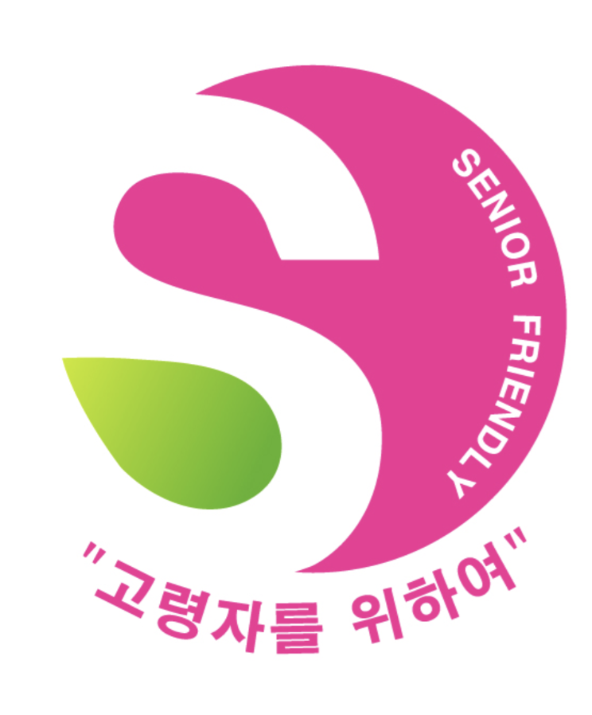

고령친화 우수식품 Senior Friendly Foods
시니어 세대의 입맛을 지켜주는 음식으로
고령자의
신체적 특성을
고려해 만든 식품을
고령친화 식품이라고 합니다
 고령친화우수식품 표시 (출처 : 농림출산식품부)
단순히 부드럽거나 영양 성분이 좋다고 해서 고령친화식품으로 분류되지 않고,
모두 여섯 단계로 이뤄진 지정 절차를 거쳐야 합니다.
관련 업체가 지정 신청을 요청하면 농림축산식품부 산하
한국식품산업클러스터진흥원이 적합 여부를 검토합니다.
-
노인이 쉽게
섭취할 수 있는지 -
소화를 편안히
할 수 있는지 -
영양 성분은
적절한 지 -
안전하게
개봉할 수 있는지 -
KS 품질 기준에
적합한지
지정 절차에 맞춰 검토하여 심사를 통과하면
이후부터 고령친화식품이란 표현을 쓸 수 있게 됩니다.
2021년 5월부터 처음으로 시행하여 2022년 현재 113개의 제품이 지정됐습니다.
영양 성분을 강화하고
부드럽고 무른 음식으로
치아로 섭취 가능한
“연하식”
틀니나 잇몸으로도
씹기 쉬운 “연화반찬류”
목 넘기을 부드럽게 만들어
고령자 사래 걸림 위험을 줄여
혀로도 식사가 가능한
“유동식”
품질기준 고령친화식품 한국산업표준(KS) 품질규격
| 경도 (N/㎡) |
500,000 이하 ~ 50,000 초과 |
50,000 이하 ~ 20,000 초과 |
~ 50,000 이하 |
|---|---|---|---|
| * 경도(단단한 정도) - 경도 수치가 낮을 수록 식품이 연하고 부드럽습니다. | |||
| 영양성분 |
|
||
| 경도 (N/㎡) |
500,000 이하 ~ 50,000 초과 |
|---|---|
| 경도 (N/㎡) |
50,000 이하 ~ 20,000 초과 |
|---|---|
| 경도 (N/㎡) |
~ 50,000 이하 |
|---|---|
| 영양성분 |
|
* 경도(단단한 정도) - 경도 수치가 낮을 수록 식품이 연하고 부드럽습니다.